College Admission Advisor (CAA) is a data application designed to help students
discover colleges and their neighborhoods across the United States.
Technologies: Python(numpy, pandas, matplotlib, sklearn), Flask, Streamlit, Google
Firebase
Software Architecture
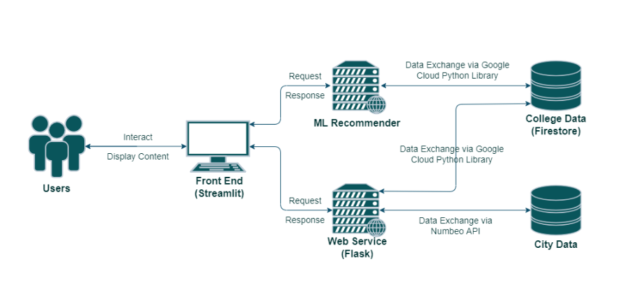
Backgroud
Motivation
Higher education provides numerous benefits to individuals as well as to society. It
is not only
associated with higher income levels and better employment opportunities, but also
plays a key
role in the nation’s economic growth and social prosperity. With great opportunities
come great
challenges as prospective students start their journey to find the perfect school.
On the path to securing college admission, students consider various aspects such
as: fields of
study, college ranking, study costs, location and cost of living. In this project,
we aim to help
students by developing a tool that collects, analyzes and visualizes critical
college related data.
This application will allow students to gauge how quantitative factors (SAT, GRE and
GPA) is
perceived by different colleges and help them make informed decisions to improve
their
admission chances.
Goal
Develop a web-based data application to assist prospective students in finding the
right school
by examining college admission and location data in the United States.
Application Component
Firestore Cloud Database
Our first dataset is of colleges admissions data. the data was exported from IPEDS,
the Integrated
Postsecondary Education Data System. A cloud database has been setup on Firestore to
maintain
and manage application data (colleges dataset).
Numbeo API
Our second data source is Numbeo, a crowd-sourced global database of quality-of-life
information. It is used to support our college admission data and provide general
city
information, such as, housing indicators, perceived crime rates, and quality of
healthcare, among
others. The data is fetched on demand utilizing Numbeo API through an academic
license.
Flask Web Service
A web service was created to connect the frontend with the data sources. It is aimed
to fetch the
data from both data sources and export it to the frontend ready to be displayed and
visualized.
Machine Learning Model
A web service was created to connect the frontend with the data sources. It is aimed
to fetch the
data from both data sources and export it to the frontend ready to be displayed and
visualized.
A Machine Learning model was developed to provide college recommendations based on a
student’s academic standing. The model was developed using Scikit-learn package to
conduct
unsupervised learning and cluster out colleges by their standard exam scores (SAT
and ACT) and
their acceptance rate.
The model input includes standardized test scores (SAT and ACT), and the acceptance
(a
calculated value from dividing total admissions over total applicants), the lower
the rate the more
competitive a college’s admission. For example, if the acceptance rate of USC is
10%, it assumes
students who are top 10% or exceed 90% of all applicants in academic performance and
other
backgrounds could get offers from USC. The measure of academic performance and
backgrounds
for undergraduate students is usually based on their GPA, AP, research or leadership
experience,
academic awards, and scholarships. Therefore, by calculating a student’s acceptance
rate using
the five factors, we could get an acceptance rate number which matches a ML cluster
combined
with his SAT or ACT score.
In order to build a ML model, first, by preprocessing the raw data, we standardized
all inputs,
such as replacing the blank values. Second, we normalized the data into range 0 to 1
by min-max
scaler for better clustering. Also, we used K-means clustering and
decided the cluster
number 7 by the elbow method. Finally, we built a ML model and saved the
model
locally for a faster operation.
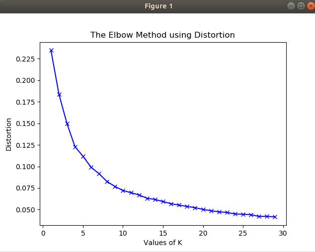
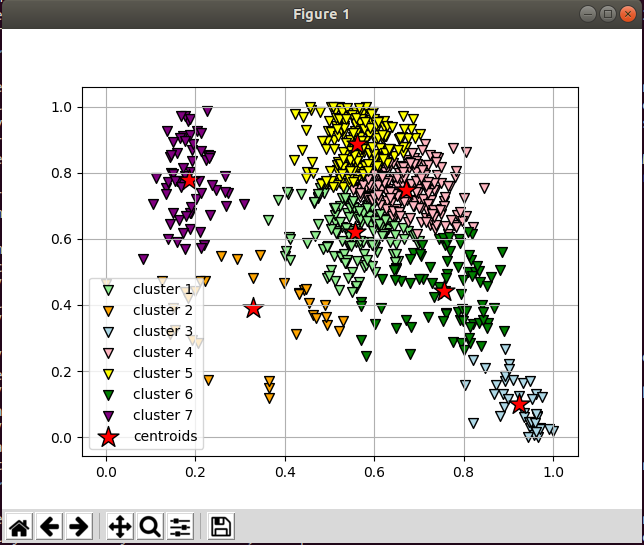
Data Flow
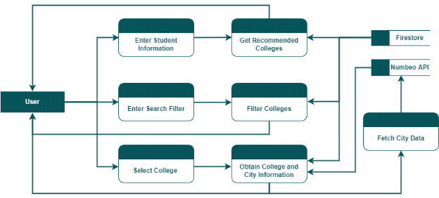
Application Main Functions
The application offers three main functions for users which are: data summary,
college
recommender and colleges search and exploration.
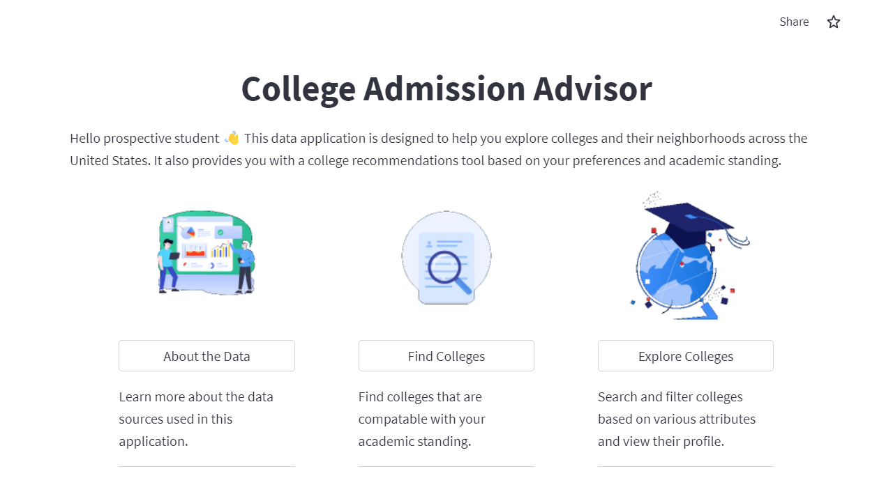
1. About the Data:
▪ A data summary displaying statistical facts about colleges data and city data. It
is aimed
to showcase a high-level visualization of the data.
▪ Provides full access to the raw data utilized and the ability to download it.
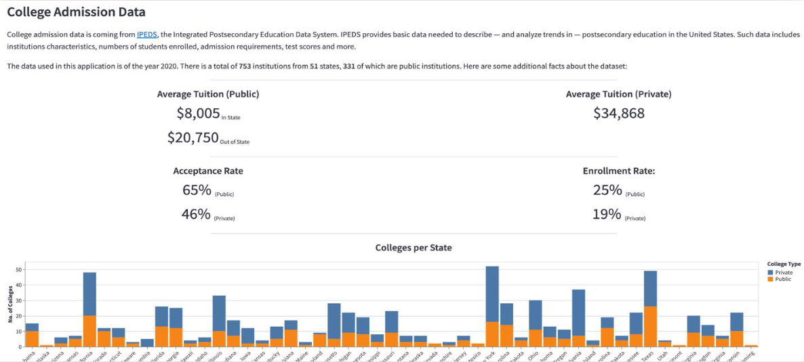
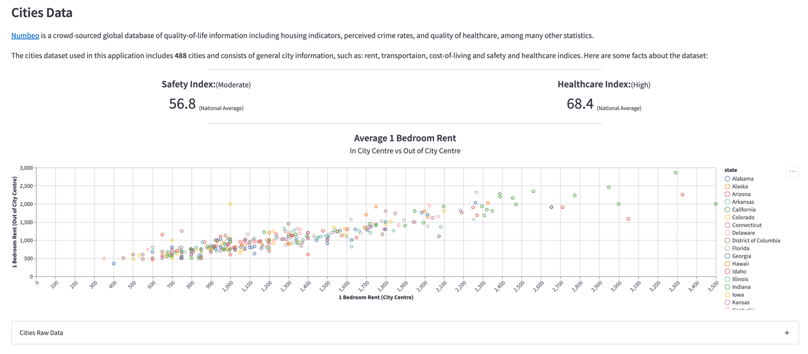
2. Find Your College:
▪ Taking users academic standing as input, then recommends a list of colleges that
are
compatible using unsupervised machine learning techniques.
▪ The inputs needed include student’s GPA, standard test scores, research experience
level,
academic awards if any, number completed AP courses and secured scholarships if
any.
▪ The result colleges are sorted based on school rank and acceptance rate.
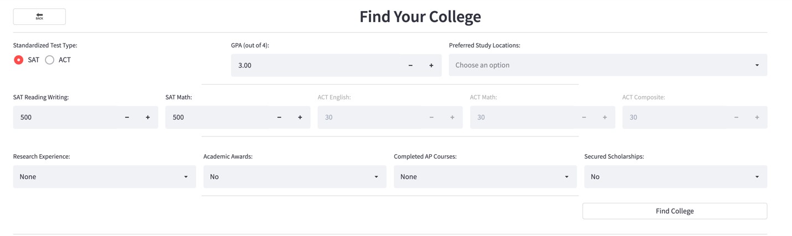
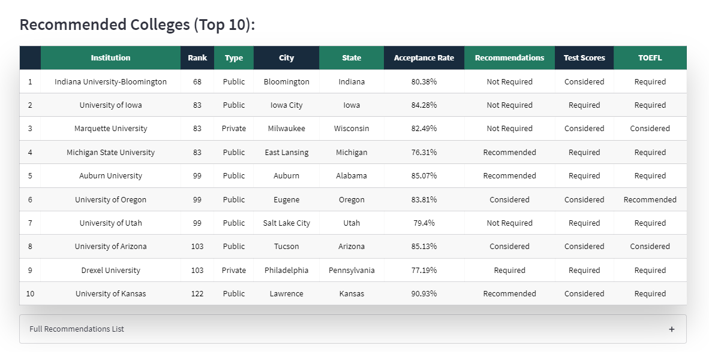
3. Explore Colleges:
▪ Allow users to search and filter colleges based on various properties and
attributes.
▪ Such properties are institution level, program offered, application requirements
and
accepted standardized test ranges.
▪ Display a selected college profile and its location information in detail.
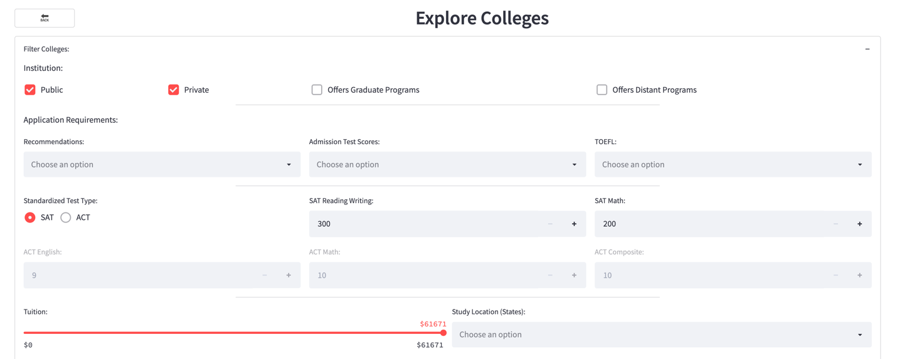
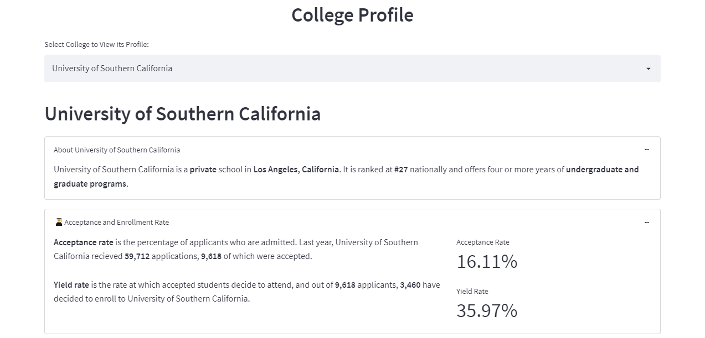
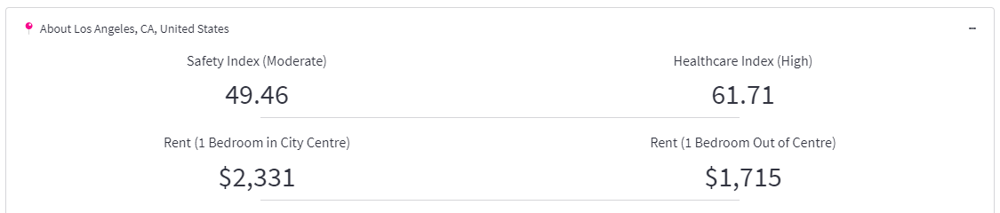
Reflection On Learning
• Collaboration:
Throughout this semester, our group has developed some excellent team-working
skills. Individuals specialize in areas and contribute to the team through the work
we produce. By collaborating, we become more confident in our knowledge and
our abilities to carry project activities effectively.
• Effective communication:
Maintaining effective communication helped us keep our project on the right
track. Especially during the pandemic, we took advantage of virtual meetings to
scheduled weekly discussion to sharing ideas, updating project progress and plan
future activities. Additionally, we have a message group chat for quick and easy
communication and a shared drive for file sharing. Those strategies help our group
to exceed the project deadline.
• Cloud database storage and access:
With this project, our team members are required to use different types of data
sources with cloud storage. From this project, we learned technical skills in cloud
database storage using Firebase and manage access data through web application
building with Streamlit. We believe those skills empower us to and have a good
impact on our future careers’ opportunities.
Challenges Faced
• Finding complete and accessible data about colleges and cities’ quality of life.
Various sources that offer such data but none of them were up to date or
comprehensive enough to cover our project scope, until we found IPEDS and
Numbeo’s. IPEDS is open source, so we were able to identify and customize the
list of properties we need. Numbeo, however, required an API license. We their
support team to request a free-of-charge academic license for the duration of our
project, and our request was granted.
• Integrating college data and city data in a meaningful manner.
Naturally, different sources have different formats and standards, so we were
challenged by merging the two datasets together while ensuring data consistency
and completeness.
• Learning different new technologies and frameworks.
A learning curve was expected as we work on the implementation of our project.
We are exposed to different technologies for different phases of a development
cycle, and it has been an enjoyable challenge so far.